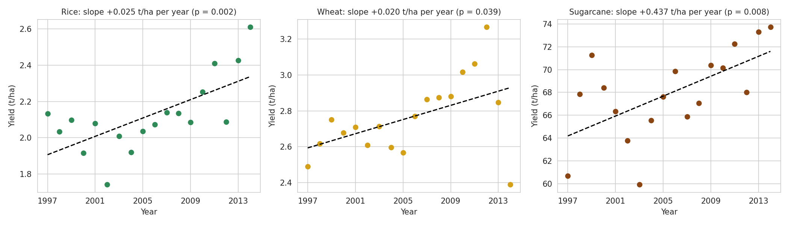
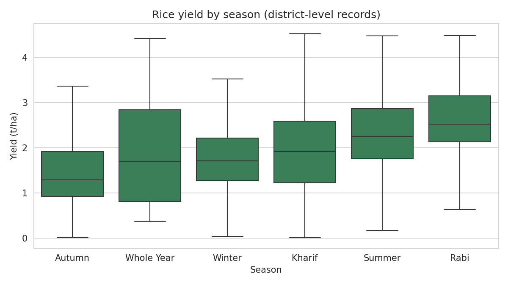
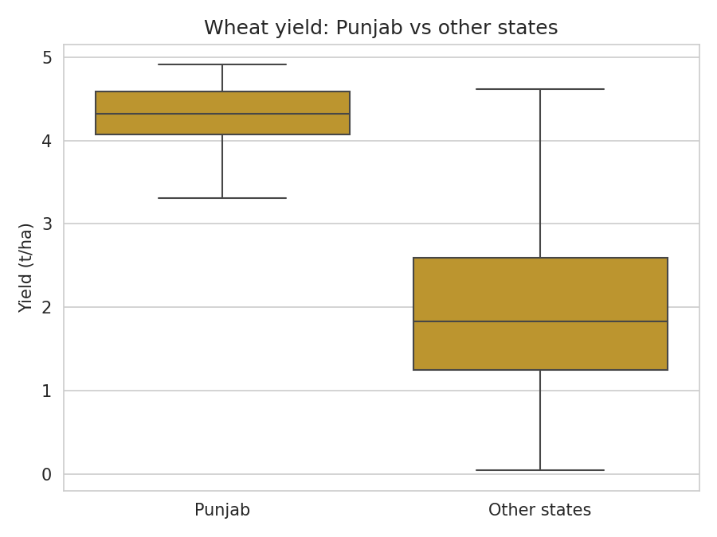
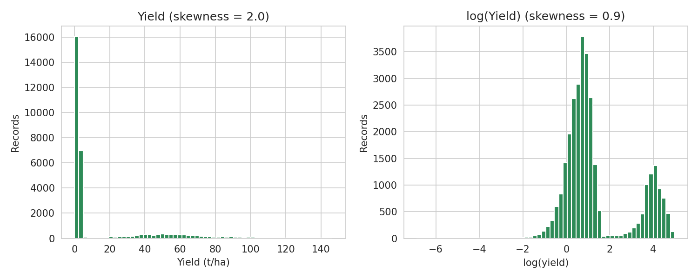
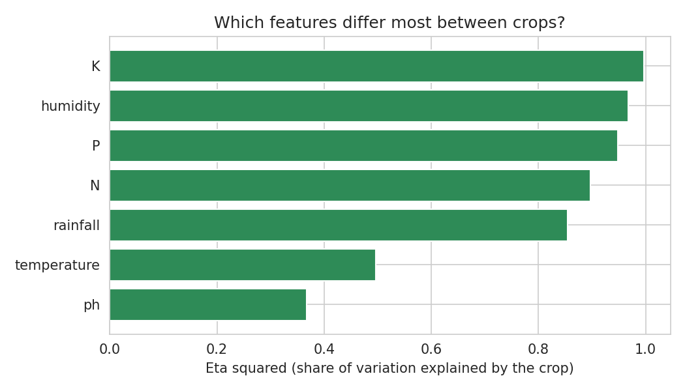

Statistical tests
Step 3 of 3 | do the patterns in the data hold up? Each test below has a question, a method and a plain-English answer.
1. Is yield going up over the years?
Linear regression of the yearly national yield on the year (1997-2014)

Yearly yield with the fitted trend line
Yes, for all three crops. Yield increased by about +0.025 t/ha per year for rice (p = 0.002), +0.020 for wheat (p = 0.039) and +0.437 for sugarcane (p = 0.008). The wheat trend is the weakest because of the drop in 2013-2014, which may be partly a data coverage problem.
2. Does the season change rice yield?
Kruskal-Wallis test (yields are skewed, so a test on medians is safer than ANOVA)

Rice yield by season
Yes (H = 1828, p < 0.001). Median yield in t/ha: Autumn 1.29, Whole Year 1.70, Winter 1.71, Kharif 1.92, Summer 2.25, Rabi 2.52. Rabi rice has the highest median yield and Autumn rice the lowest.
3. Is Punjab really better for wheat?
Mann-Whitney U test, Punjab compared with all other states (district-level records)

Wheat yield: Punjab vs other states
Yes. The median wheat yield is 4.32 t/ha in Punjab and 1.83 t/ha in the other states (p < 0.001). The difference is large, not only statistically significant.
4. Do bigger districts have higher yield?
Spearman rank correlation between sown area and yield (district-level records)
Weakly for rice (rho = +0.13), moderately for sugarcane (rho = +0.40) and clearly for wheat (rho = +0.61). All p-values are < 0.001. This is an association only: big wheat districts are mostly in the irrigated north, so area is probably standing in for region.
5. Why does the yield model use log(yield)?
Skewness before and after a log transform

Distribution of yield before and after the log transform
Yield is right-skewed (skewness 2.0 to 0.9). Taking the log makes it much more symmetric, and it stops the huge sugarcane yields from dominating the model.
6. Do soil and climate differ between the 22 crops?
One-way ANOVA for each feature of the crop recommendation data. Eta squared is the share of the variation explained by the crop.

Effect size of each feature
| Feature | F | Eta squared | p |
|---|
| K | 27,238 | 1.00 | < 0.001 |
| humidity | 3,104 | 0.97 | < 0.001 |
| P | 1,886 | 0.95 | < 0.001 |
| N | 898 | 0.90 | < 0.001 |
| rainfall | 606 | 0.85 | < 0.001 |
| temperature | 102 | 0.50 | < 0.001 |
| ph | 60 | 0.37 | < 0.001 |
Every feature differs between crops (all p < 0.001). K, humidity and P separate the crops almost completely (eta squared at least 0.95), while ph (0.37) and temperature (0.50) separate them least. Such a clean separation is unusual for real field data, which fits the very high accuracy of the recommender model.
7. How certain are the average yields?
95% confidence interval of the mean yield (t distribution, district-level records)
| Crop | Records | Mean yield (t/ha) | 95% CI |
|---|
| Rice | 14,849 | 1.95 | 1.93 to 1.96 |
| Wheat | 7,781 | 2.06 | 2.04 to 2.09 |
| Sugarcane | 7,708 | 54.44 | 53.82 to 55.07 |
The averages are estimated very precisely. These are plain averages of district-level records, so they are lower than the production-weighted national yields on the dashboard (for example, rice 2.12 t/ha), because small districts count equally here.
All test results
| Test | Method | Result | p-value |
|---|
| Yield trend: Rice | Linear regression of yearly yield on year | slope = +0.025 t/ha per year, R2 = 0.45 | 0.002 |
| Yield trend: Wheat | Linear regression of yearly yield on year | slope = +0.020 t/ha per year, R2 = 0.24 | 0.039 |
| Yield trend: Sugarcane | Linear regression of yearly yield on year | slope = +0.437 t/ha per year, R2 = 0.36 | 0.008 |
| Rice yield by season | Kruskal-Wallis test across seasons | H = 1828; medians: Autumn 1.29, Kharif 1.92, Rabi 2.52, Summer 2.25, Whole Year 1.7, Winter 1.71 | < 0.001 |
| Wheat yield: Punjab vs other states | Mann-Whitney U test (one-sided) | median Punjab 4.32 t/ha vs others 1.83 t/ha | < 0.001 |
| Area vs yield: Rice | Spearman correlation (district-level records) | rho = +0.13 | < 0.001 |
| Area vs yield: Wheat | Spearman correlation (district-level records) | rho = +0.61 | < 0.001 |
| Area vs yield: Sugarcane | Spearman correlation (district-level records) | rho = +0.40 | < 0.001 |
| Yield distribution | Skewness before and after log transform | skewness 2.0 -> 0.9 | - |
Read the p-values carefully. The records are district-years, not independent samples: the same district appears every year and neighbouring districts are similar. This makes the p-values look smaller than they should, so the effect sizes (medians, slopes, correlations) matter more. The data is observational, so the tests show associations, not causes.